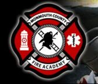
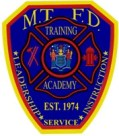
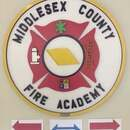
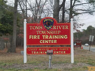

Operations
IamRespondingMonmouth County Fire StationsMARP PlansMCSO Emergency ManagementEmergency ReportingHalliganReady NJFEMA
Training

Monmouth County Fire Academy
Middletown Fire Academy
Middlesex County Fire Academy
Toms River Fire AcademyAll Hands FireKean Fire Safety